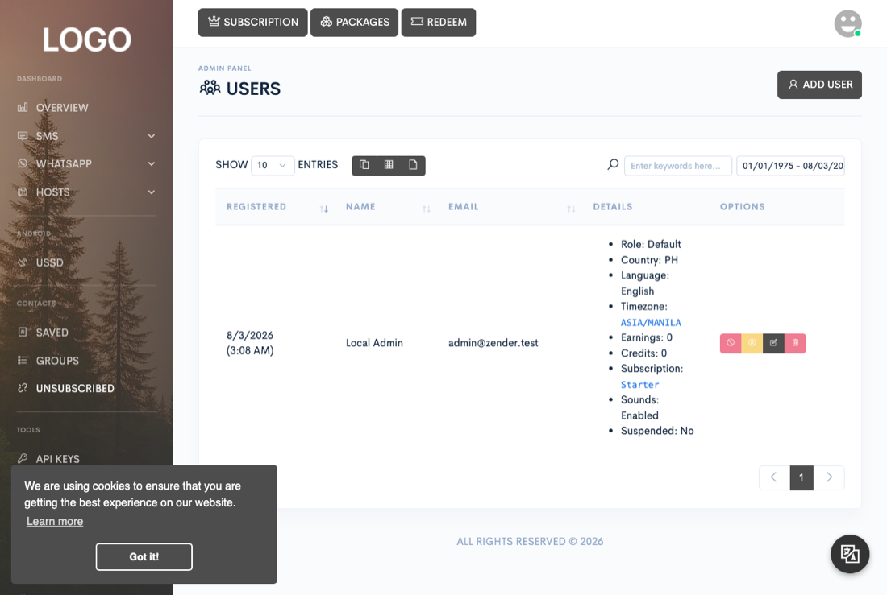

Administration
Users & roles
Manage every account on your Zender install: add customers directly, control what their role lets them do, adjust their credits, and suspend or remove them when you need to.

Every account on a Zender install — including the super admin created during setup — lives in the same accounts table. What separates the super admin from an ordinary customer is simply being the original account created at install time; that account passes every permission check unconditionally, everywhere in the app. Everyone else is only as powerful as the role attached to their account.
Adding and managing user accounts
Admin → Users lists every account and lets you add one directly (name, email, password, role, language, formatting, and a starting credits balance) without the person registering themselves. Each row also carries impersonate, edit, suspend, and delete buttons. Impersonate, suspend, and delete are disabled in that table for the super admin's own row.
Defining roles and permissions
Admin → Roles is where you define what a non-super-admin account can actually reach. A role is just a name plus a list of permissions; a user's effective permissions come entirely from the role assigned to them in their account. Every admin menu item in the sidebar, and every action behind it, is gated by exactly one of these permissions.
A role can be given any combination of: Users, Roles, Packages, Vouchers, Subscriptions, Transactions, Payouts, Widgets, Pages, Marketing, Languages, Gateways, Shorteners, Plugins, Templates, and API management. A role needs at least one of these checked to be created at all.
Setting a customer's credits
Credits are spent as customers send SMS and WhatsApp messages. There's no separate
admin "adjust credits" action: the Credits field in both the
add-user and edit-user forms (Admin → Users) sets the
account's balance to whatever value you type — it overwrites the current
balance rather than adding to it. Entering a lower number than the customer's
current balance reduces it, and leaving the field blank on edit resets it to
0.
This is separate from a customer topping up their own balance from the dashboard (the Add credits button on their Overview page), which goes through a payment provider and increments the balance instead of setting it.
Suspending an account
The ban icon on each row in Admin → Users toggles the account's suspended flag. This requires user-management permission and refuses to touch the super admin's account. Suspending doesn't delete or hide anything the user has already sent or stored.
What actually changes is who can get in. A suspended account is blocked at every entry point that checks the flag: the normal login form, social login, and both the Android gateway app's login and QR pairing endpoints. A suspended customer's dashboard session, API keys, and already-linked Android devices and WhatsApp accounts are otherwise left alone — they simply can't authenticate again once logged out, and a device trying to log back in gets rejected the same way a browser login would.